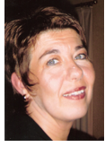

Je me présente :
- Je suis née en 1962 à Pétange au Luxembourg. - Après mes études d’infirmière je termine ma spécialisation de sage-femme à l’école des Sages-femmes à Luxembourg ville. - Depuis 1984 je suis employée à la Maternité G.D.Charlotte à Luxembourg. - En 1991 je commence à donner des cours prénataux pour accompagner les jeunes parents dans leur nouveau rôle. Pendant ces années, mes cours évoluent fortement pour les adapter aux besoins des parents et au changement dans notre société. - En 1997 je commence mes services aussi au secteur libéral comme sage-femme. - Au long de mon expérience, je remarque qu’il y a une grande demande pour des cours après l’accouchement. C’est ainsi que je propose les Juniormeetings et le massage du bébé. |
 |
Le fil conducteur dans ma vie professionnelle est l’adaptation de la préparation, de l’encadrement et de l’accompagnement aux besoins changeants des futurs parents, ceci aussi bien en Maternité qu’en libéral.
Dans ma vie privée, je suis très heureuse d’avoir rencontré mon mari et d’avoir eu mes trois fils qui sont nés en 1985, 1990 et 1993
Comme loisirs j’aime la lecture, le cinéma, la nature, le yoga, la natation et faire des vacances avec ma famille.
Michèle Finck